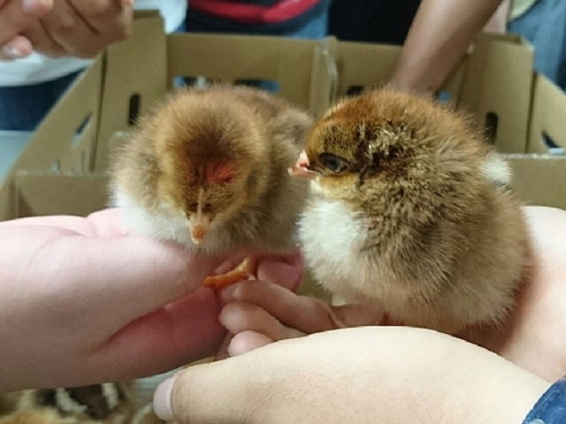

Topic

にわとり（大学研究）
家畜管理学研究室に所属してました。そこでは鶏の不可食脂肪を減らせないかという研究を行っていました。
まさかこの経験が今後を左右するものだと思ってもみませんでした。
研究室を選んだ理由
実際に動物を扱って解剖がしたかったからです。
私が研究室に入る前に震災がおきましてその関係で研究室によっては研究の仕方を変えなければならない状態になりました。
もともとは牛の病気を扱っている研究室に入りたかったんですが校舎がかわって近くに動物がいない状態で保存していた臓器を扱う研究になりそうという話でした。
実際に動物を扱いたいなと思っていたところ家畜管理学研究室の先生がにわとりの小規模の飼育ならできる実際に動物を扱って解剖できるよという話をされていたのでそこにきめました。
研究内容
ブロイラーと熊本の地鶏である天草大王に海藻粉末を添加した餌を与え不可食脂肪を減らせないかという研究をしていました。
にわとりは家畜改良されまくった動物で餌を与えれば何もしなくても大きくなるように改良されました。しかし、すぐに大きくなる分いらない脂肪も多くなってきました。いらない脂肪は加工するときに手間がおおきくなってしまいます。
そこで餌に添加物を加えることで体は大きくさせながら脂肪の蓄積を減らせないかという研究を行っていました。
添加物に海藻粉末を使った理由はもともと豚でされていた研究で豚で成果がでたのでにわとりにも使えないかというところからはじまっているためです。
研究結果は海藻粉末を添加しても成長には影響なく、脂肪減少また甲状腺が増大していることから脂肪蓄積抑制効果および免疫力向上が見込まれるという感じで終わっています。
残りの課題は添加する量をどれくらいにするかということになります。添加量をなるべく抑えた状態で一番効果が発揮されるのはどの量か。将来の研究に期待です。